Overview
Freelance visual designer for Joydotz, a Gen-Z hydrocolloid skincare brand, through Swedish Falls LLC. Took the brand from a bare-bones Shopify default into a soft, interactive "小清新" (soft & fresh) identity, rebuilding the color system, the site's interaction design, and product visuals.
Brand System+Site Rebuild
Visit joydotz.us ↗Color System
The old site leaned on a default clinical, acne-treatment red. Instead of designing around that association, I extracted a softer, more girlish palette directly from the product packaging itself: a pale pink-to-blue gradient, warm cream, and one saturated hot-pink accent for calls to action.
Palette pulled from the Daydream Cloud, Blush Flower, and Softwing Butterfly packaging — the same pink-to-blue gradient now drives the nav bar, buttons, and hover glows sitewide.
Homepage
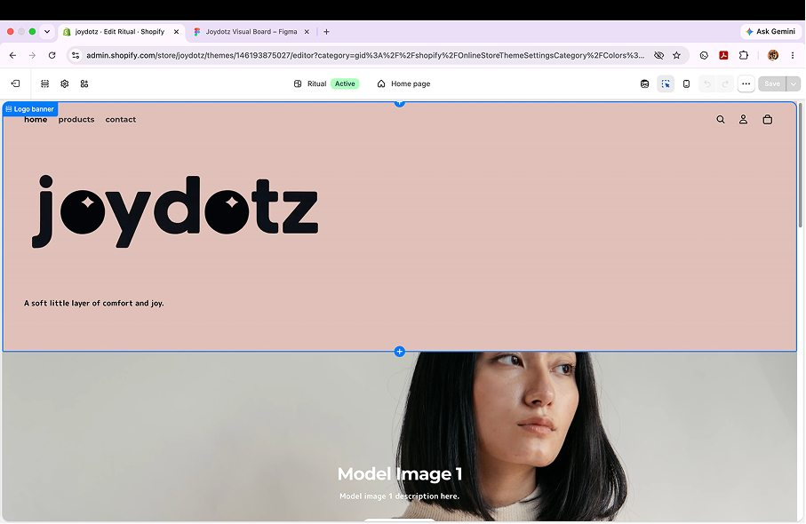
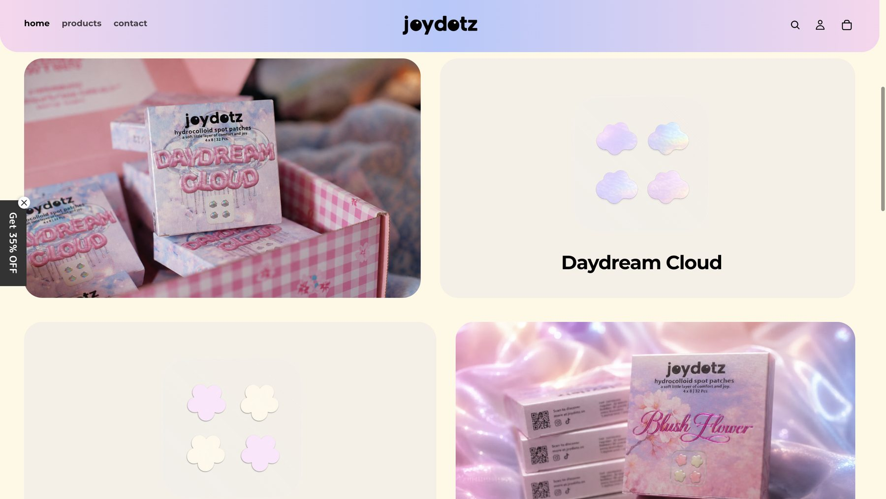
Replaced the flat salmon banner and static logo with a full-bleed video hero, a pink-to-blue gradient nav bar, and sparkle "eyes" set into the logo's two O's — the first hint of the interactive planet character carried through the rest of the site.
Product Listing — Shape Filter
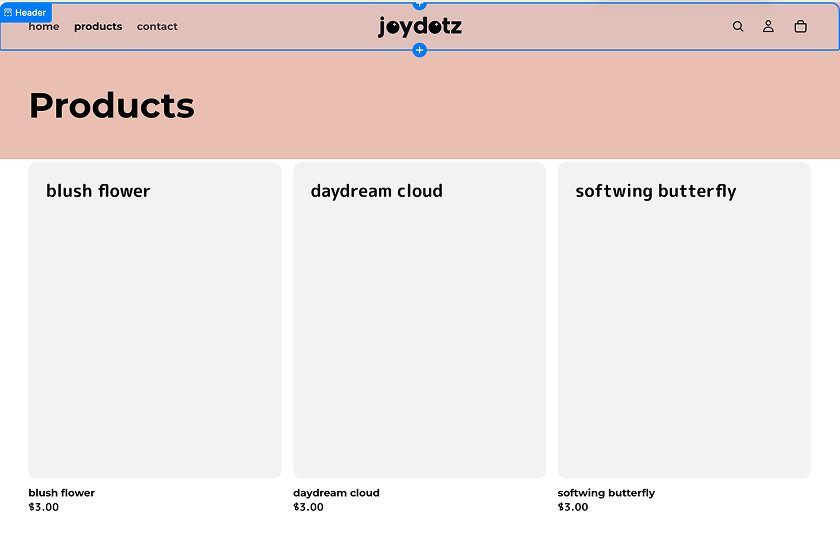
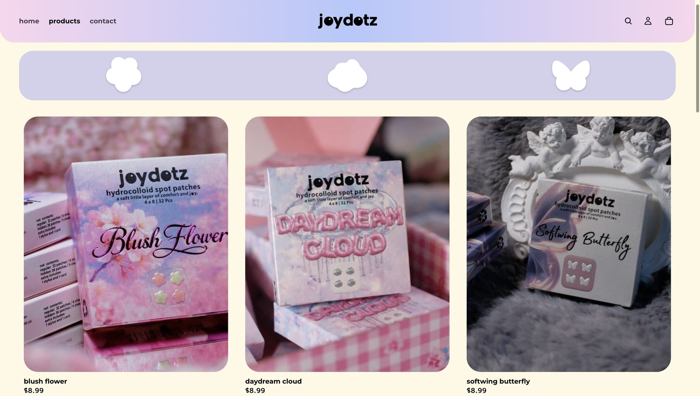
Built a shape-based filter bar (flower / cloud / butterfly) that mirrors the brand's three patch collections, with a soft glow that blooms on hover — turning empty placeholder cards into a system that teaches the product line at a glance.
Product Page
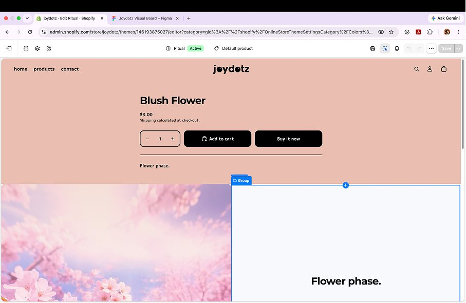
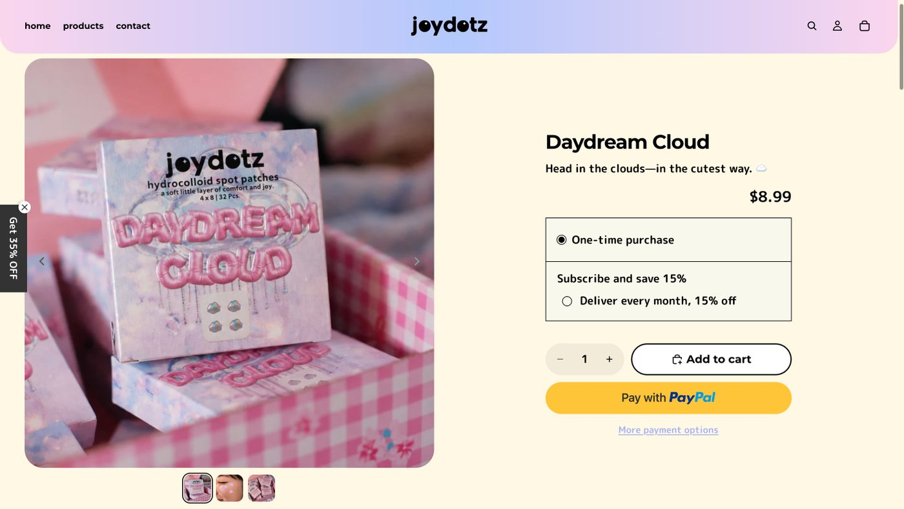
Swapped placeholder blocks for real packaging photography, added a subscribe-and-save option, and matched the checkout buttons to the new palette.
Cross-Sell & Add to Cart
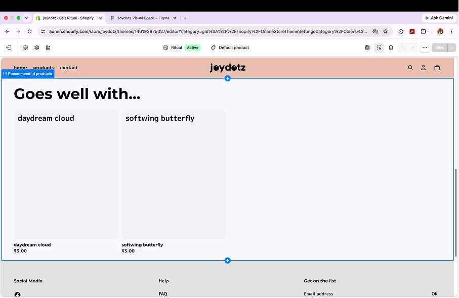
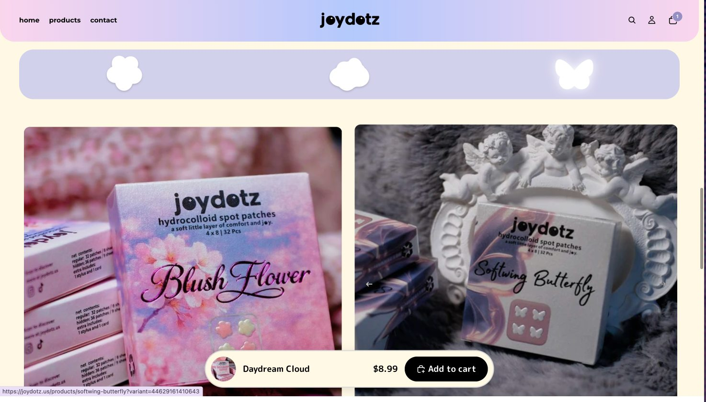
Added a sticky add-to-cart bar that follows the shopper with the product thumbnail, name, and price, and gave the "goes well with" cards the same shape icons and hover glow used on the listing page.
Interactive Footer — O_planet
The old footer was a static, generic block. I designed a giant gradient "planet" that rises from the bottom of the page with two sparkle eyes that track the cursor and blink — a small mascot moment that rewards scrolling all the way down instead of ending the site on a plain sitemap.
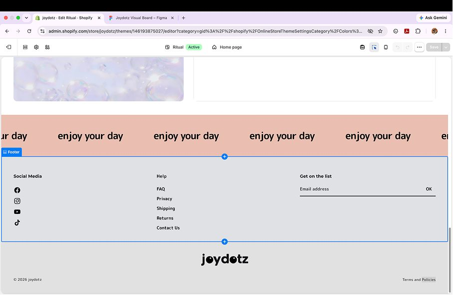
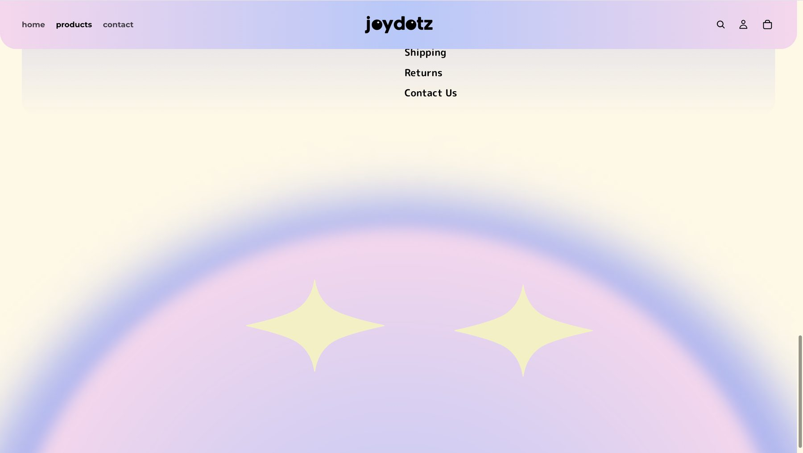
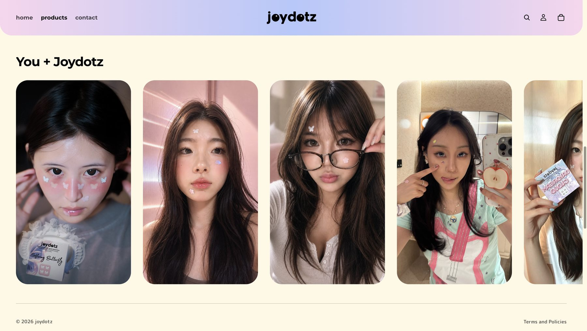
Personal Series — What If Statues Have Pimples
A personal offshoot from the brand work: patching famous statues around the world with Joydotz shapes, treating the product itself as a playful, shareable content format rather than a straight product shot.
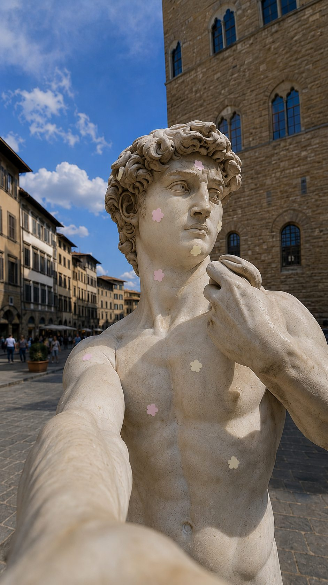
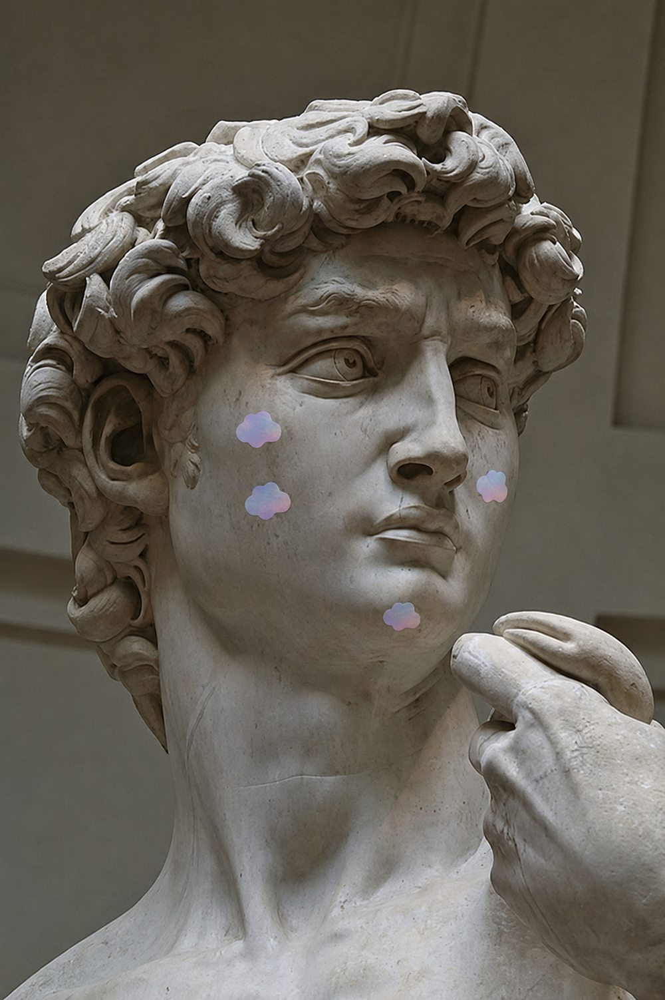
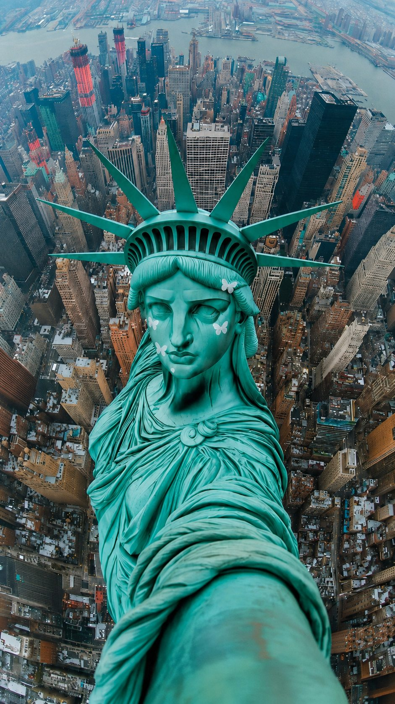
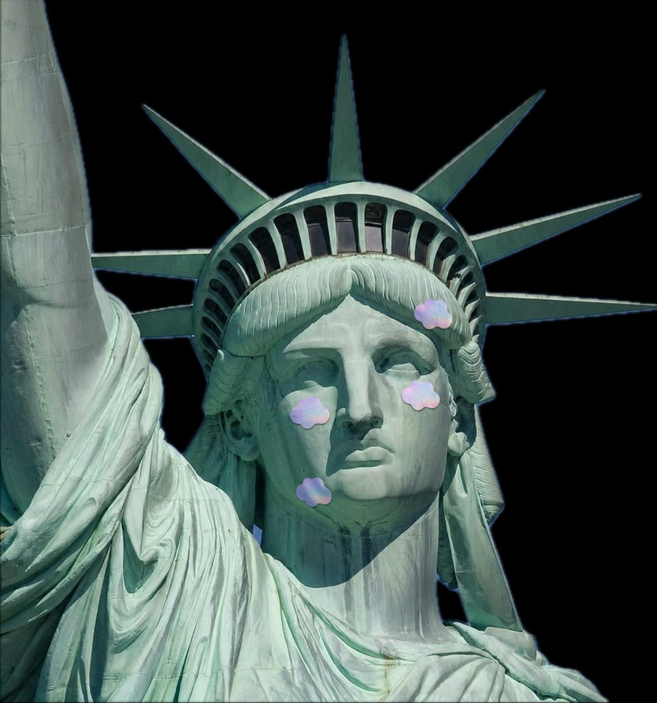
Concept — Blind Box Characters
Developed with the Joydotz team: sell the patches as blind boxes, giving each of the three patch shapes (flower, cloud, butterfly) an original character in the style of Sailor Moon or My Little Pony.
Future product drops would become "skins" of those three starter characters rather than entirely new SKUs — modeled on Pop Mart's approach to deepen brand storytelling for a Gen Z, young-girl skincare audience beyond "just a daily patch."
Reflection
Took Joydotz from a default Shopify skin into a cohesive, interactive brand system: a packaging-derived color palette, a shape-based product language, and a mascot moment that carries the identity all the way to the footer.
Working from an established brand rather than a blank page pushed a different skill: finding the fresh angle already hiding in the packaging (the color gradient, the shape language) instead of inventing one from scratch, then carrying it consistently across every touchpoint.